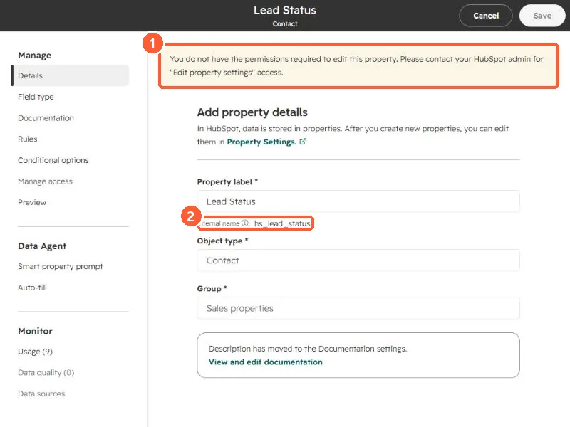
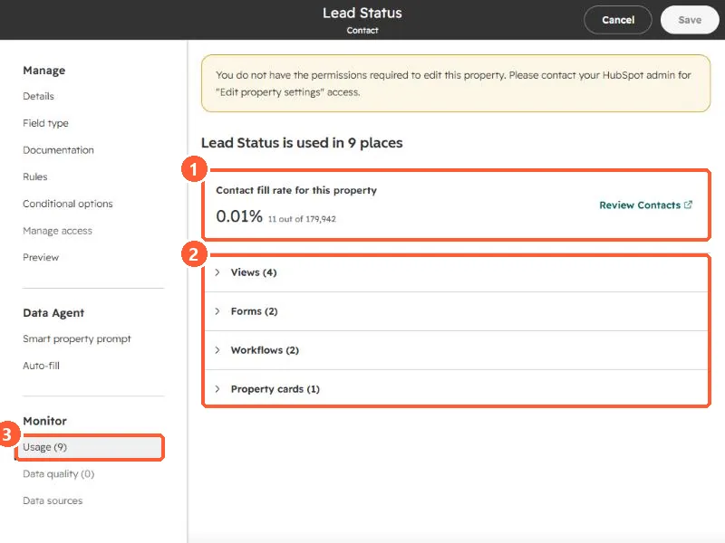

Short answer
Open a property from Settings, Properties, then click Usage under Monitor. It shows the fill rate (in my demo, Lead Status is filled on 0.01% of contacts, 11 of 179,942) and every place the property is used, grouped as views, forms, workflows, and property cards. HubSpot will not let you archive a property that is used in assets such as a segment, form, or workflow, and archived properties are permanently deleted after 90 days.
1. Open the property
Search for the property on Properties and click it. It opens in a full-screen editor with sections on the left: Manage, Data Agent, and Monitor. My demo login shows a yellow banner because it cannot edit properties, but it can still read everything.


The internal name under the label is the name integrations and the API use. Write it down before you change anything.
2. The Usage section
Click Usage under Monitor.


- Fill rate. 0.01%, 11 out of 179,942 contacts. A link opens those contacts.
- Used in 9 places: Views (4), Forms (2), Workflows (2), and Property cards (1). Expand each to see which ones.
3. What that tells you
- A property with a near-zero fill rate but two workflows is not unused. The workflows may be what is supposed to fill it.
- HubSpot only lets you archive properties that are not used in assets that prevent archiving, such as a segment, form, or workflow. Remove it from those first.
- Archived properties sit on the Archived tab and are permanently deleted after 90 days.
For cleaning up the workflows themselves, see find unused workflows.